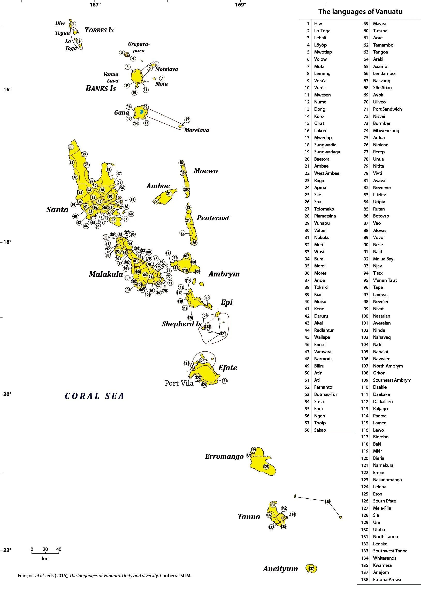
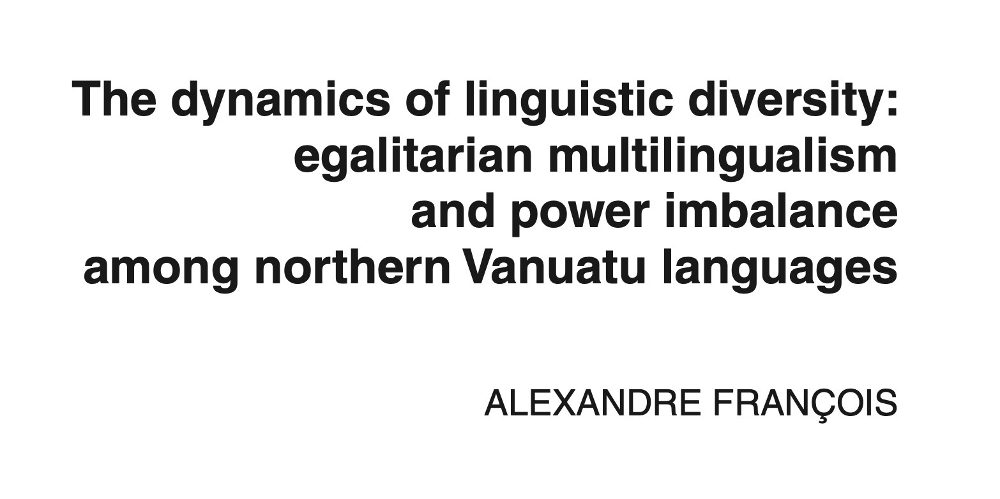
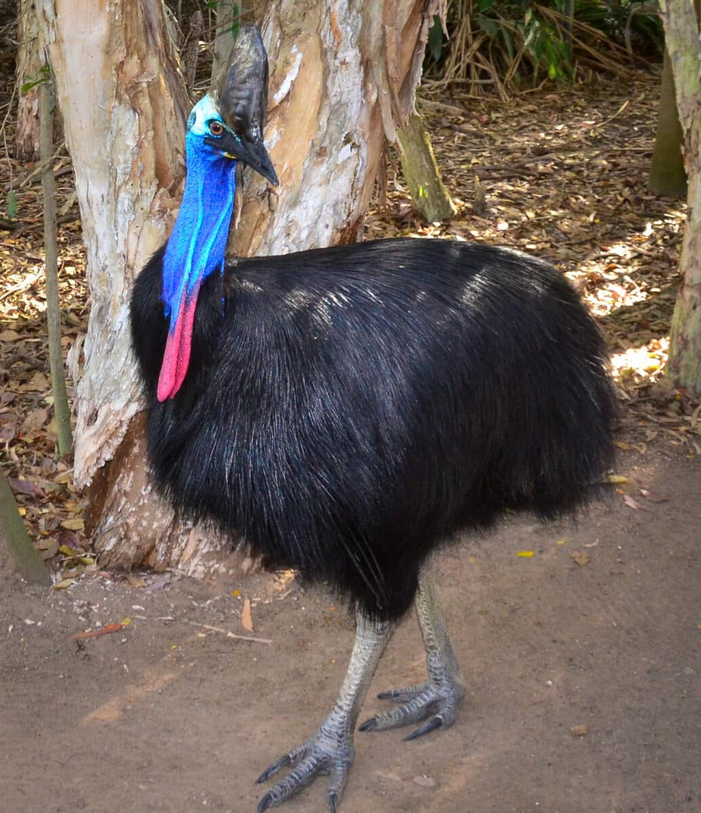
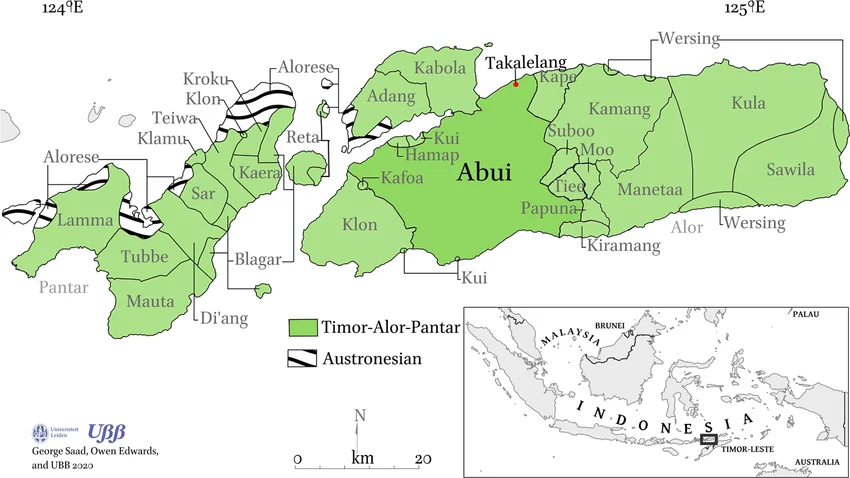
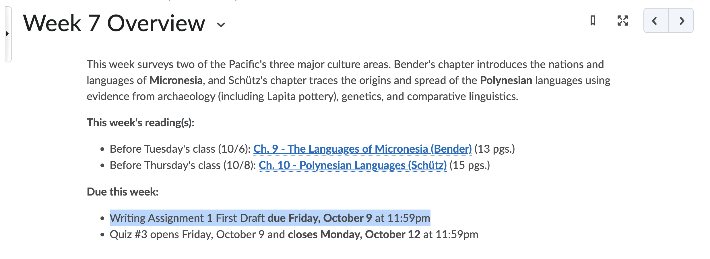

Multilingualism & Language Diversity (cont.)
LING 150C, Week 6
![]()
October 1, 2026
Journal (5 min)
Choose one option and write silently. We’ll hear from a couple of people afterward.
Option A
Have you ever noticed a group (a friend group, a team, your hometown) deliberately speaking differently from a neighboring group, almost as a way of saying “we’re not them”? What did that look like?
Option B
Describe a word or phrase that’s specific to your family, hometown, or friend group — something an outsider wouldn’t get. What would be lost if you stopped using it?
Reminders
Quiz 2 closes on Lamakū tomorrow, Friday, October 2 at 11:59pm. Only 7 of you have completed it so far — please finish it before the deadline.
Office Hours: Wednesdays/Fridays 1:30-2:30pm in Moore Hall 574 or on Zoom
- If you can’t make that time, email me to set up a different time.
Writing Assignment 1 Draft is due next Friday, October 9 at 11:59pm
- 750 words
Today’s Plan
- Activity: Research a Pacific Country
- Your Discussion Questions
- Looking ahead to next week
Activity: Research a Pacific Country
In your group: research your assigned country/territory on Wikipedia or another reliable source. You have 8 minutes.
- New Caledonia
- Tonga
- Federated States of Micronesia
- Indonesian Papua
- Solomon Islands
- French Polynesia
Answer as a group:
- How many indigenous languages does it have? What’s your source?
- What’s the metropolitan (colonial/official) language?
- Is there a pidgin, creole, or lingua franca used across language groups?
- Which of today’s three factors best explains its level of diversity?
- Anything that doesn’t fit the patterns we discussed today?
- One fun fact about the country/territory that your group didn’t know before
Compare and Constrast
- Report Each Each group gives a 1-2 minute rundown of what they found — locating the country/territory, reporting the numbers, the languages, and their factor hypothesis.
- Look at the doc Once all six are finished, look across the whole set together — what patterns jump out?
Discuss: Which factor came up most often as the best explanation across the six? Did any country not fit neatly into the patterns from Tuesday?
Your Discussion Posts
From Your Discussion Posts
Great questions and connections came in on Chapter 7 — let’s dig into a few.
- Only 11 of you posted this week; Remember that these posts contribute to your Writing Intensive (WI) requirement, and make up part of your final grade for this class.
Vanuatu, Revisited
Michael asked: how can one small island group have languages so different that neighboring islands can’t understand each other?
Dyllan asked: when a language is only spoken by a few hundred people and isn’t being passed to kids, what happens next — and does losing the language mean losing parts of the culture?
Discuss: What would it take for a language with a few hundred speakers to survive another generation?

Why So Many Languages?
Linguist Alexandre François has spent decades documenting this exact puzzle in northern Vanuatu (the Torres and Banks Islands).
- 17 languages, 9,400 people — all descended from one ancestor language, 3,000 years of divergence
- Isolation alone doesn’t explain it — people there are constantly in contact: trading, intermarrying, visiting
- Language as identity marker: communities deliberately keep their speech different from close, friendly neighbors — François calls this language’s “emblematic function”
- Egalitarian multilingualism: no village outranks another, so no variety becomes “the” prestige language — everyone just learns their neighbors’ languages instead

Discuss: If isolation alone doesn’t explain Vanuatu’s diversity, what does this suggest about places that are very isolated but still only have one language?
Zooming Out: Is This Just Vanuatu?
- Not unique to the Pacific: linguists call this pattern “small-scale” or “egalitarian” multilingualism — the same setup (many small languages, no prestige hierarchy, everyone multilingual) is documented in West Africa, the Amazon, and northern Australia too (Lüpke 2016; Pakendorf, Dobrushina & Khanina 2021)
- A bigger claim: linguist Nicholas Evans (2018) argues this may be close to the ancestral human condition — that language itself likely evolved in multilingual small-scale societies, not isolated monolingual ones
- If he’s right, multilingualism isn’t the exception that needs explaining — monolingual nation-states are the historically recent, unusual case
Discuss: If small-scale multilingualism was the human norm for most of history, why does monolingualism feel like the “default” to so many people today?
Vanuatu’s Other Language Split
Jinghao’s question: the reading mentions ni-Vanuatu learn English or French depending on their school — how is that distributed? Do families choose, or is it based on where they live? Is there debate about it?
- Vanuatu was jointly ruled by Britain and France until 1980 — a colonial “condominium” — and kept two entirely separate, parallel school systems at independence rather than merging them
- Schools register as English-medium or French-medium, not mixed; children usually attend whichever is available locally, often tied to earlier missionary history in that area
- Years 1-2: Bislama or the local vernacular; English or French phased in by Year 3; Years 3-13: instruction entirely in English or French
- The split isn’t a strict geographic English-region/French-region boundary — it’s institutional, school by school, a direct legacy of the colonial system surviving 45+ years after independence
Discuss: Why might a newly independent country choose to keep two parallel colonial-language school systems rather than consolidating into one national language of instruction (English, French, or Bislama)?
Language and Local Knowledge
Kale’s connection: in BOT 444 (Ethnoecology), Kale has studied how Indigenous and Local Knowledge (ILK) develops over generations through a community’s relationship with its environment — and noticed this tracks closely with how Lynch describes language diverging through geographic and social separation.
Kale’s question: could neighboring language groups in Melanesia have different names, classifications, or knowledge systems for the same plants and animals?
Discuss: If language and ecological knowledge both diverge through isolation, which one do you think usually changes first?
Kale’s Question, Globally
David Harmon (1996) compared the countries with the most endemic languages (found nowhere else) to the countries with the most endemic vertebrate species (mammals, reptiles, birds, amphibians found nowhere else).
- 64% overlap between the top 25 countries on each list
- Papua New Guinea ranks #1 for endemic languages (847) and in the top 10 for endemic vertebrate species
- His explanation: the same conditions — rugged terrain, isolation, small-scale societies — that let species diverge into new forms also let languages diverge into new forms. One doesn’t cause the other; both are downstream of the same isolation
Discuss: Harmon’s explanation is about geographic isolation producing both effects in parallel. How does this compare to François’s claim (from the Vanuatu slides) that language diversity is partly deliberate, not just a byproduct of isolation? Could both be true at once?
Example
A concrete case: the Kalam people of the Upper Kaironk Valley, Papua New Guinea highlands (~13,000 speakers).
Zoology (Bulmer 1967): Kalam classify cassowaries separately from all other birds — not by mistake, but because cassowaries occupy a unique role in Kalam thought and ritual. Their system also sorts animals by habitat (forest vs. garden vs. homestead; aerial vs. terrestrial vs. underground), not just by body shape the way Western biology does.

Botany (Gardner 2010): Kalam distinguish roughly 500 named plants — many finer-grained than Western scientific species, some grouping things Western botany splits apart.
Discuss: Bulmer titled his paper “Why is the cassowary not a bird?” What does it tell us that this is a real, serious research question?
This Research Is Happening Right Now
A 2024 PhD dissertation — from right here at UH Mānoa — documented exactly this kind of plant knowledge for the Abui people of Alor Island, eastern Indonesia (A.L. Blake, advised by Gary Holton). It’s a direct, current answer to Kale’s question about how a group actually classifies plants.
Names encode different kinds of knowledge, not just appearance:
- al fiyaai “nettlespurge,” lit. “Islam candlenut” — two plants that look nothing alike, linked because both were burned for lamp oil; the name preserves history, not shape
- fia beeka “fern bad” — marks a fern as inedible, in contrast to “good” (edible) ferns — classification by utility
- kupai meeting “forest betel-vine” — classification by habitat
Metaphor drives the categories, often from the body or animals:
- kaai hawet “Ziziphus,” lit. “dog its teeth” (thorns)
- wata muur “pomelo,” lit. “coconut citrus” (fruit size)
- katiki “Conyza,” lit. “loincloth broke” (shredded-looking leaves)
Discuss: Western botany classifies primarily by evolutionary descent. Abui plant names show at least five other organizing logics — history, utility, habitat, body-part metaphor, taxonomic prototype. Is any one of these more “correct” than the others?

From Pidgin to Mother Tongue
Francesca’s question: Bislama, Tok Pisin, and Pijin all started as simplified contact languages for 19th-century trade and plantation labor — how does a language like that become someone’s actual first language?
- The short answer: urbanization, not a deliberate decision. As towns like Port Vila, Port Moresby, and Honiara grew, people from many different indigenous-language backgrounds ended up living side by side
- With no single shared indigenous language in these mixed communities, the pidgin — already everyone’s common second language — became the only shared language of daily life
- Adults kept making the pidgin more expressive through ordinary creative use, even before any child spoke it natively
- Once children in these communities grew up hearing only the pidgin at home, it became their native language — this is creolization: pidgin → creole happens when a generation of kids acquires it as a first language
- The scale today: Tok Pisin alone has an estimated 3-5 million speakers, many now native
Discuss: This is the same process (urbanization, a shared contact language taking over daily life) driving the Bislama/indigenous-language shift from earlier in class. Is a pidgin becoming a creole a loss, a gain, or both?
One Person, Several Languages
Linguists call it domain-based language choice (or, when it’s stable over time, diglossia): multilingual speakers don’t use their languages interchangeably — they assign specific languages to specific settings, like home, school, work, or religion.
Chloe’s post: growing up in Hawai’i with a Chinese family background, Chloe noticed she speaks differently depending on who she’s talking to — English at school, another language at home — and connected this to why multilingualism is so common across the Pacific.
Hanna’s post: a student from Ecuador who speaks four languages, Hanna noticed the exact triglossic pattern Lynch describes for Vanuatu (local language at home, Bislama in public, English/French at school) in her own life — German and Spanish with family, English for university, English and Spanish with roommates in Hawai’i.
Kiana’s question: multilingualism in Melanesia/Polynesia often develops out of necessity, not choice — does that change how it’s experienced? In Kiana’s own social circles, people react to multilingualism with excitement, suspicion, or by “dumbing down” their speech around less-fluent listeners. Do speakers in the Pacific relate to their own multilingualism the same way?
Discuss: Map your own languages (or registers, slang, codes) onto their domains — which goes with which setting? Then: does multilingualism by necessity feel different from multilingualism by choice?
For Tuesday
Quiz 2 closes Friday, October 2 at 11:59pm
Read Ch. 9 - The Languages of Micronesia (Bender) (13 pgs.)
Keep in mind: Writing Assignment 1 First Draft due Friday, October 9 at 11:59pm


LING 150C